O Nosso Wrapped: 4 Anos de Trilha Sonora Juntos
Meu amor, de 2021 até hoje, cada ano foi uma playlist inesquecível. Aperte o play na nossa história.
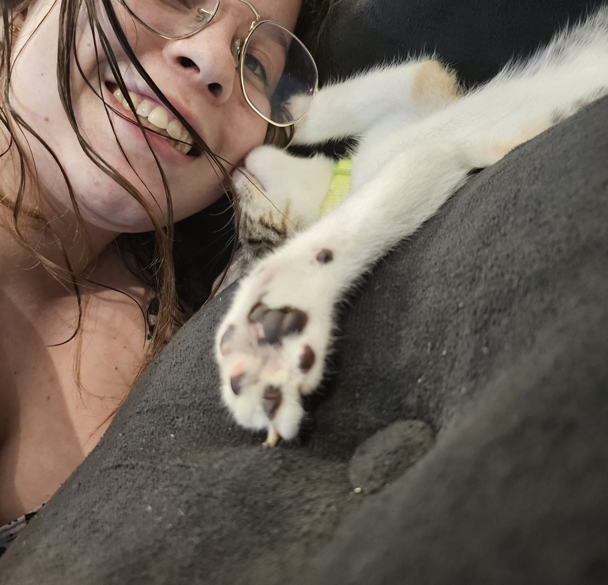
A Faixa 01 da nossa história.
 "Se fossemos transformados em gatinhos peludinhos".
"Se fossemos transformados em gatinhos peludinhos".
 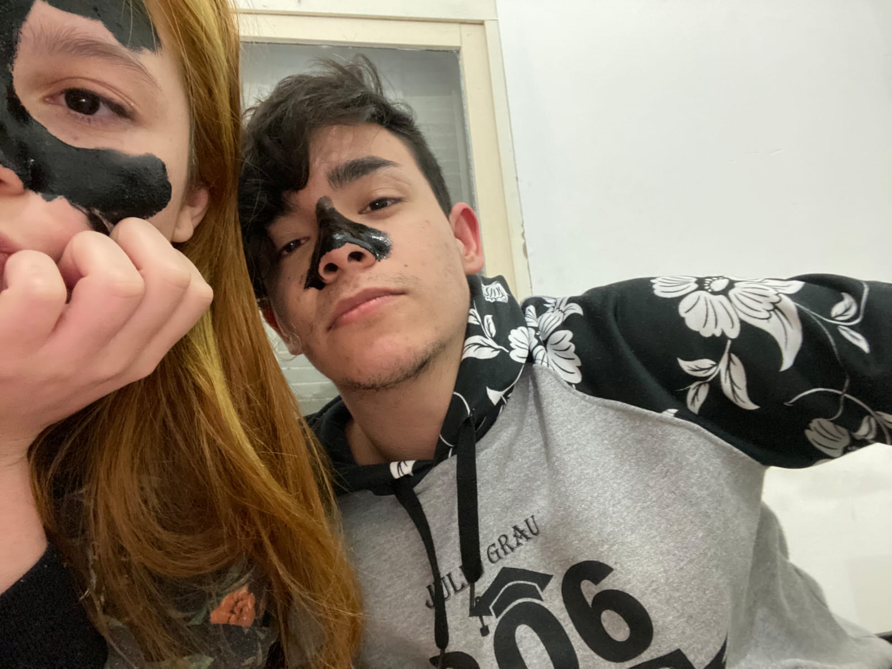
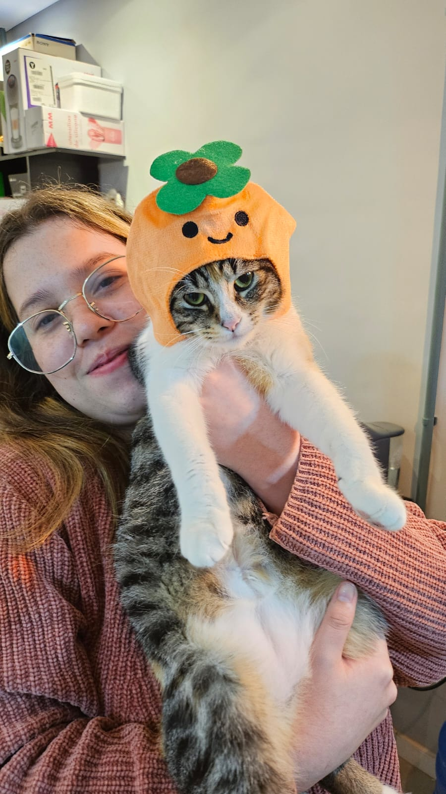
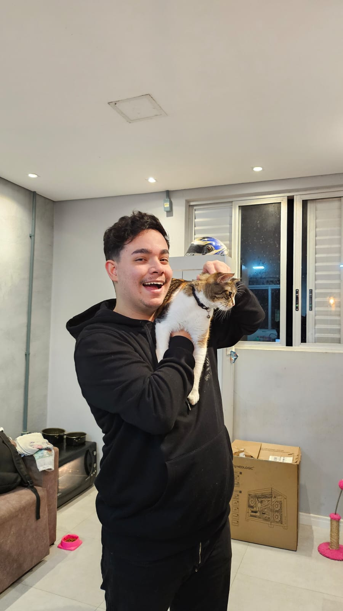
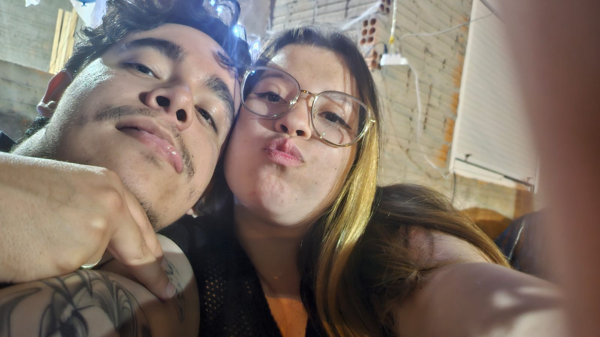
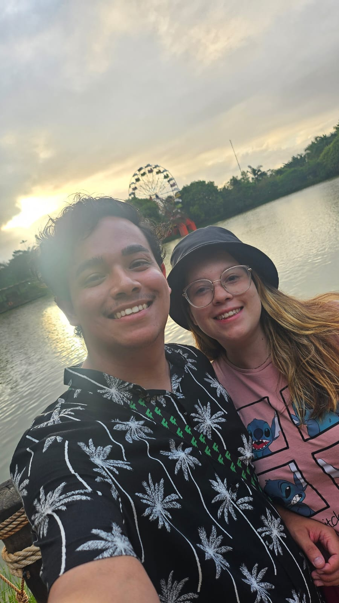
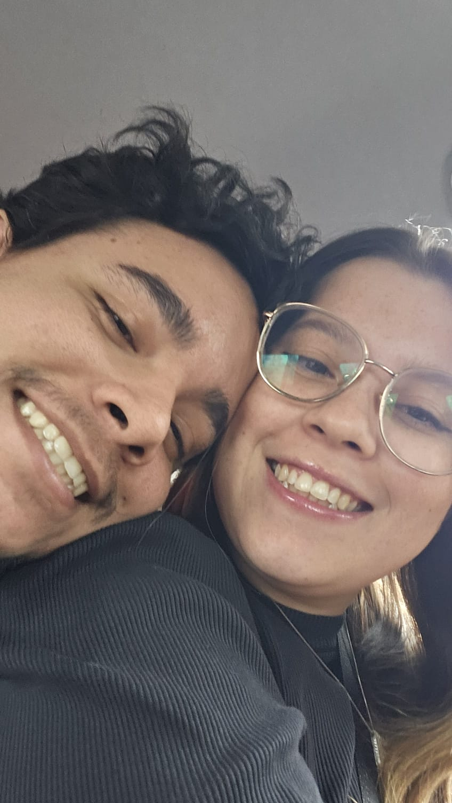
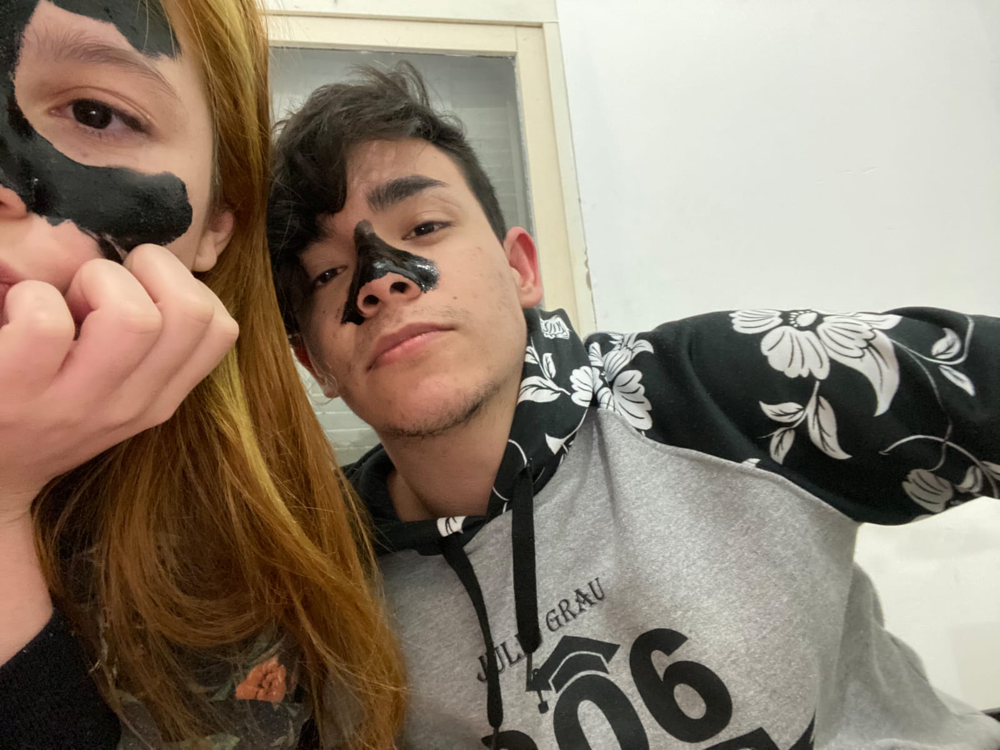
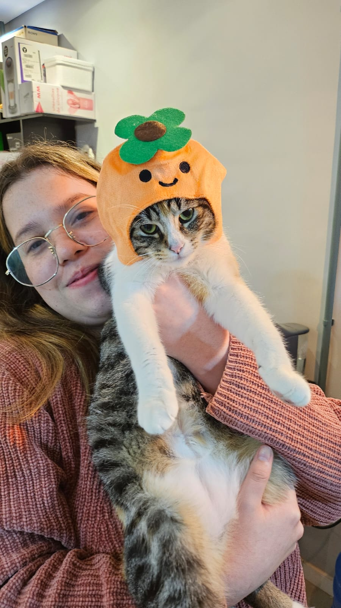
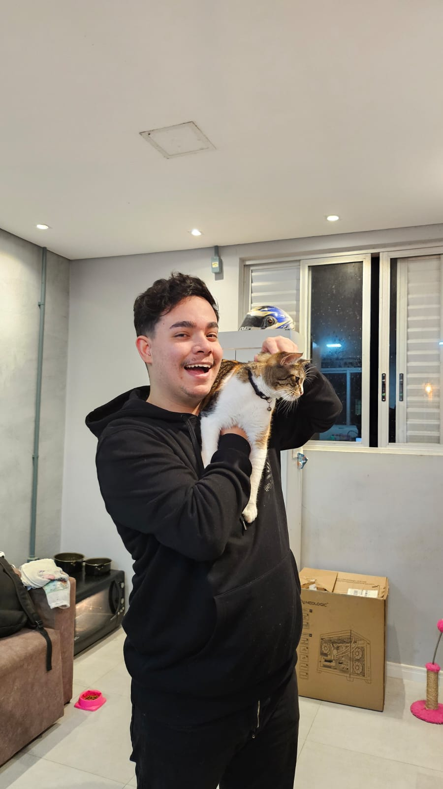
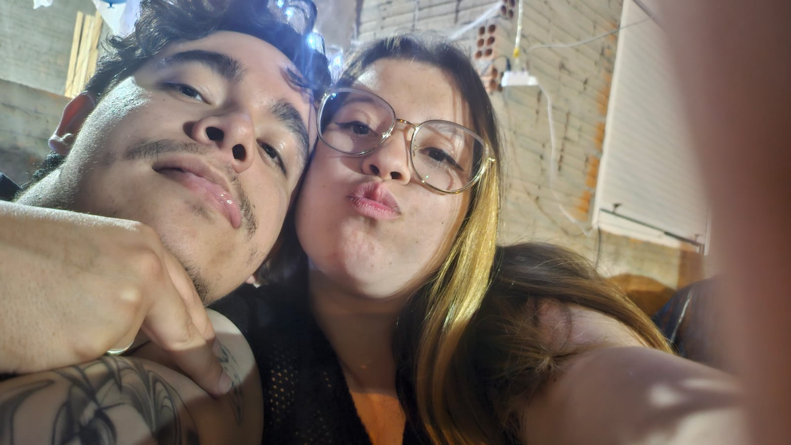
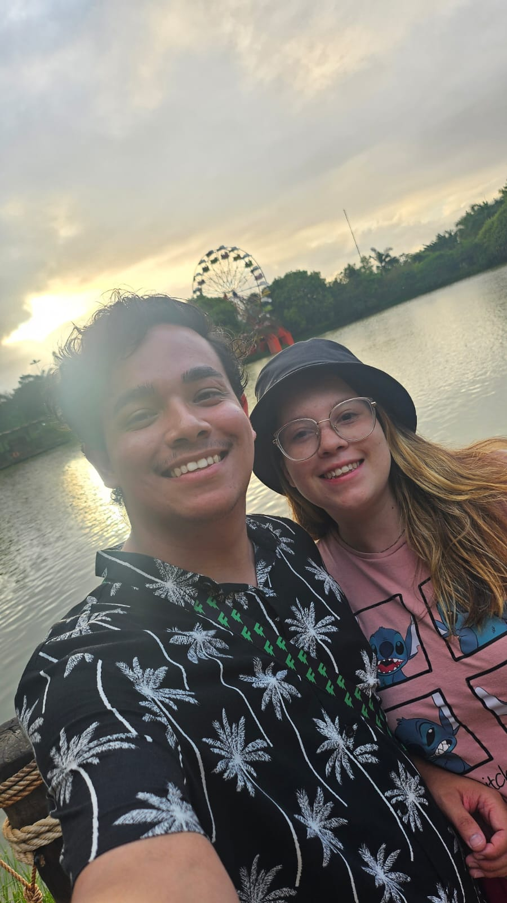
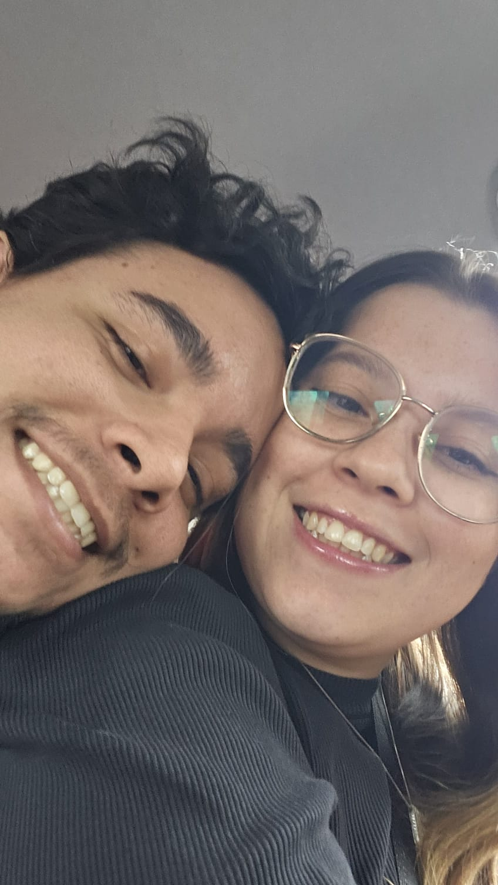